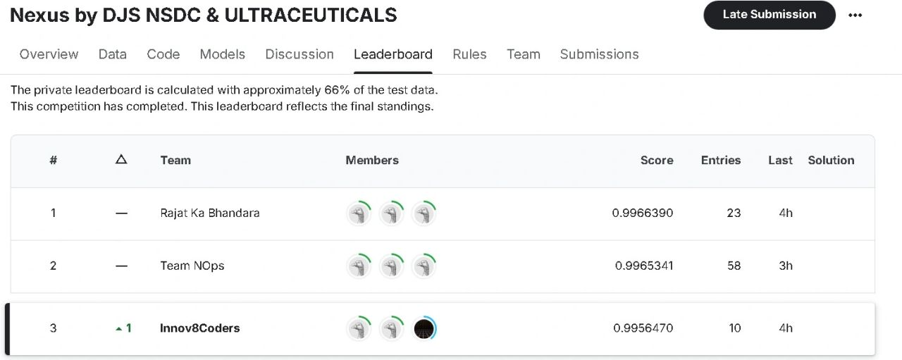
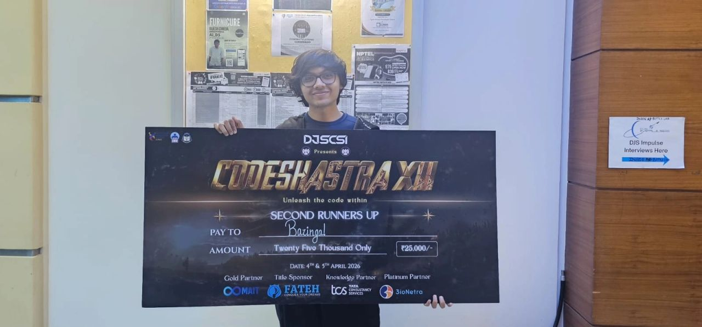

Coarse-to-fine retrieval over long video: topic → scene → keyframe. My piece was the Gaussian-smoothed keyframe scoring used for temporally stable evidence. On 463 videos and 1,103 queries: 42.2% Video R@1, 57.0% Scene R@3, a 3.7× recall gain over flat retrieval.
Keyush Nisar
Researcher in uncertainty, LLM serving, and evidence for deployed AI
Kaggle ExpertCompetitions, datasets, community
2 papersSpringer venues, under review
4 internshipsLondon, VJTI, US, Mumbai
CodeAICo-founder & Technical Head
About me
Hi, I’m Keyush Nisar. I work on uncertainty in learned systems, LLM serving, and runtime evidence for deployed AI — the gap between a score that can rank options and a score that is honest enough to be treated as a decision.
I am a B.Tech student in Artificial Intelligence and Machine Learning at D.J. Sanghvi College of Engineering, University of Mumbai (2023–2027). I have worked with RAI Tracker (London), CoE-CNDS Labs at VJTI, CerebralZip, and EnsanAI. At college I co-founded CodeAI — DJSCE’s student AIML club — and serve as Technical Head: a workshop for the mathematics, then a project that can be measured. Always open to research conversations. Feel free to reach out :)
Research interests:
- The intersection of generative modeling, uncertainty-aware machine learning, and reinforcement learning.
- What is preserved—especially uncertainty and predictive structure—when generative models are compressed or accelerated, and whether those representations still support reliable downstream decisions.
- Efficient generative models, world models, and learning-based control, with mathematically grounded objectives and empirical checks that the learned representation actually supports robust decision-making.
Uncertainty quantification
World models
LLM serving
AI Agents
Harness
Research
Uncertainty-preserving distillation for diffusion world models 2026 – Present
Independent · GitHub
The question is whether a fast one-step student of a diffusion world model still carries the epistemic uncertainty a controller needs, or only the mean next state. A natural single-latent disagreement match does not uniquely identify that uncertainty; I constructed counterexamples and a multi-latent objective that separates epistemic and aleatoric channels. After a training-pipeline bug was isolated, both channels recover in controlled and live SAC runs. Policy-return transfer on a harder pre-registered benchmark is in progress.
Behavioral evidence in multi-agent systems — RAI Tracker Apr 2026 – Jul 2026
Responsible Systems Ltd, London · Supervisor: Dr. Rajeev Chakraborty
Runtime traces as the primary evidence of how a deployed multi-agent system behaves across defined ethical dimensions. A candidate telemetry signal has to pass three gates — instrumentation validity, statistical validity, evidentiary independence — before it is treated as evidence of an ethical-risk pattern. The stack is OpenTelemetry, a system-agnostic schema, and dashboards that turn traces into experimental verdicts. A collaborative manuscript is in preparation.
Multilingual NLP and video understanding — CoE-CNDS Labs, VJTI Feb 2025 – Jan 2026
Mumbai · Supervisors: Dr. Faruk Kazi, Aum Patil
LoRA fine-tuning of XLM-RoBERTa on a 23-language Indic corpus for low-resource NLP, and a semantic video-retrieval pipeline using CLIP representations, keyframe extraction, and rolling-gradient similarity for temporal matching on long-form video.
Research publications
First author. An OpenAI-compatible gateway over stock vLLM that learns per-replica service time online and routes without engine patches. Under 2× service-time asymmetry, 48.3% lower p99 than Round-Robin. The result that travels: a model that ranks replicas well can still over-reject healthy traffic if those scores are used as an absolute SLO gate — ranking and admission have to stay separate.
Industry experience
Machine Learning Intern — CerebralZip Jul 2026 – Present
VJTI-incubated startup, Mumbai · government environmental and safety monitoring
ML for noisy citizen reports: multilingual incident classification, multi-issue detection, department routing, and alerts. Time-series forecasting and source attribution for environmental monitoring. ALPR on degraded field footage — low light, blur, distance — combining plate detection with OCR.
AI Production Engineering Intern — EnsanAI Aug 2025 – Apr 2026
Remote, Delaware, US · healthcare AI
Evaluation for clinical agents: HIPAA-oriented compliance, empathy, drift, and safety. Production microservices on GCP and an MCP server into operations tooling; inference cost down 35%, latency down 40%.
Selected projects
LM-JEPA for symbolic regression GitHub
Joint Embedding Predictive Architecture, moved from vision into symbolic regression: learn the mathematical structure of an expression without generating tokens one by one.
Voice-first financial agent GitHub
Streaming voice agent with interruption handling (sub-500ms time-to-first-audio) and OpenTelemetry across tool-using state transitions.
Casual dynamical AI GitHub
Notes and experiments on physics, calculus, and probabilistic graphs for agents that reason about structure, not only next tokens.
CodeAI — DJSCE’s student AIML club
Co-founder, Technical Head, and ML mentor · Jun 2025 – Present
A college club for people who want to enter AI/ML without skipping the mathematics. Mentorship runs from linear algebra and loss geometry into a pipeline that can be evaluated. I taught a Roadmap to AI/ML seminar (perceptrons through deep learning), and hosted a Kaggle competition inside the CodeQuest hackathon — 25+ teams.
Industry project Client: Aspira Labs, Mumbai
Directed a student team building an AI engine for automated prescription interpretation at Aspira Pathology Lab. I owned the OCR stack and the plan for an MIS dashboard with AI insights over a 3,500+ test catalog. Interpretation accuracy: 92%+.
Teaching & talks
Roadmap to AI/ML | CodeAI, DJSCE
An invited session for students starting in AI/ML: how the field is structured, what to learn first, and how a small project becomes a result you can defend. A short cut from the talk is below.
Open source & community
Public work lives on GitHub (world models, dynamical AI notes, Kaggle notebooks).
- Patches under review on vLLM Production Stack (router latency accounting) and Evidently AI (safer empty-data statistical tests).
- Kaggle Expert — keyushnisar. Competitions, public notebooks, and dataset work aimed at putting usable data and methods into the community rather than only climbing a private leaderboard. Hosted a club competition so students ship on a public board.
Awards & achievements
- Nexus Kaggle competition (DJS NSDC & Ultraceuticals) — 2nd runner-up, team Innov8Coders. Private-leaderboard F1 0.995647 on drug-status prediction.
- CodeShastra XII (DJSCSI, 4–5 Apr 2026) — 2nd runner-up, team Bazinga. ERP-based AI FaithTech app. Prize: ₹25,000.
- Hack2Infinity — Best in AI, mental-health app MindCompanion.
- Catnip Infotech Hackathon — Runner-up, recommendation system.


Education
D.J. Sanghvi College of Engineering, University of Mumbai Aug 2023 – 2027
B.Tech in Artificial Intelligence and Machine Learning
Mathematics and systems underneath the models: probability, linear algebra, algorithms, then machine learning, deep learning, NLP, and computer vision — used in the research above rather than listed as a course catalog.
Technical skills
Research & GenAI: transformers, PEFT / LoRA, diffusion models, uncertainty quantification, LLM evaluation, LangChain, LangGraph, agent harnesses
Languages & frameworks: Python, Go, SQL, PyTorch, TensorFlow, scikit-learn, FastAPI
Systems: vLLM, OpenTelemetry, Kafka, gRPC, Docker, Kubernetes, PostgreSQL
Cloud & monitoring: AWS, GCP, Arize Phoenix, Prometheus, Grafana, Hugging Face